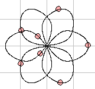
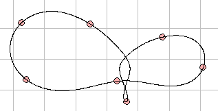

Choreographies of N bodiesThis is a simulation of a planar N-body problem with initial conditions that result into all bodies following the same curve (at different times), in a sort of dance in the plane. The resulting trajectories are unstable, and sooner or later, the choreography will brake. |
 |

The initial data has been kindly provided by Carles Simó. UAB. Spain.